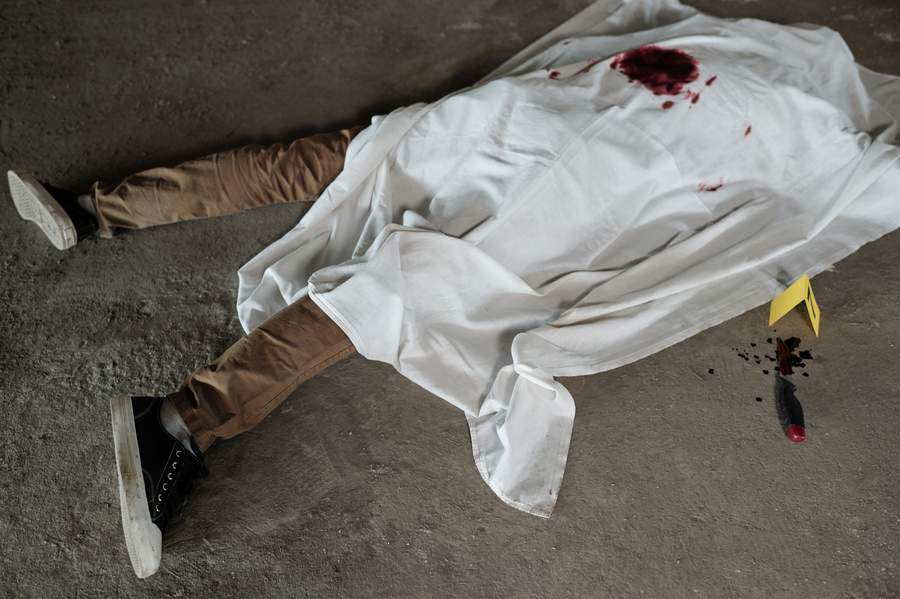
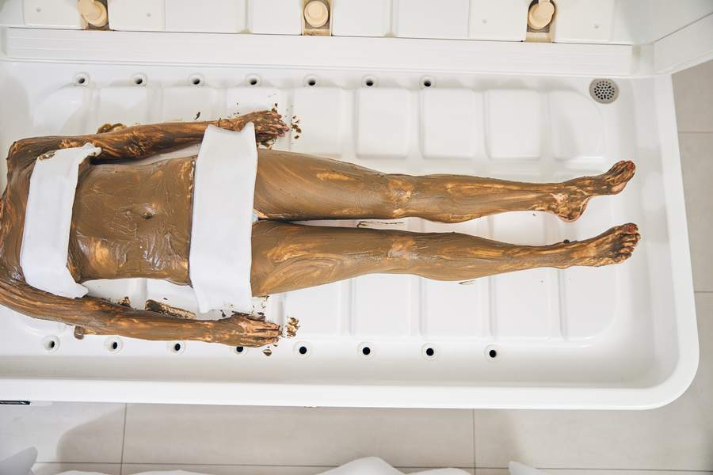

This archive was recovered from a compromised B.T.A. server node on ██/██/2019. The original leaker has not been identified. Contents have been partially reconstructed from corrupted database backups. Some files remain unrecoverable. The Bureau is aware this archive exists. They have not attempted to remove it. Draw your own conclusions about why.
The Bureau of Temporal Affairs (B.T.A.) is a clandestine agency operating outside conventional governmental oversight. Established by executive order in 1947 — the same year as the founding of the CIA, the NSA, and the restructuring of the Department of Defense — the Bureau's stated purpose is the monitoring, management, and containment of temporal displacement events.
A temporal displacement event is an incident in which human consciousness is transferred across time periods, typically into the body of another individual living in the target era. The Bureau maintains that this is not theoretical. It is a documented, repeatable phenomenon.
The Bureau operates through a system of regional nodes, each designated by a Greek letter. Currently known nodes include Alpha (Western Europe), Gamma (East Asia), Delta (Western US), Epsilon (South America), and Sigma (Eastern US). Each node monitors its region for displacement activity and maintains field teams for intervention when necessary.
The Bureau's motto — "Protector Fidelis Frequentiam Mutat" — translates as "The Faithful Protector Changes the Frequency." Its secondary motto is "Ancora Tenet" — "The Anchor Holds." The relationship between these two phrases has been the subject of extensive debate. See: THEORIES section.
The Bureau does not cause displacements. It claims to manage them. Whether that management is benign is a matter of considerable disagreement among those who've studied these files.
They don't cause them. They just decide who gets to come back. — D.R.
Every confirmed displacement event requires three components. No exceptions have been recorded in the Bureau's ██-year monitoring history.
A physical object encoded with temporal frequency data. Artifacts are not manufactured — they form naturally during moments of extreme temporal stress. The Bureau theorizes these moments occur when multiple timelines briefly overlap, usually coinciding with events of intense emotional significance: births, deaths, catastrophes, or convergences of many lives in a single place.
The most common artifact form is magnetic tape — the iron oxide coating is particularly receptive to temporal frequency encoding. VHS, audio cassette, and reel-to-reel formats have all been documented. Less common artifacts include vinyl recordings, exposed photographic film, and in one disputed case from 1958, a music box recovered from ██████, France that played a melody no one had ever composed.
When an artifact is played or activated, it emits a frequency signature that initiates the displacement sequence. The frequency is inaudible to humans — it manifests as "static" or "interference" to human ears. Bureau research suggests the frequency may be perceptible to certain animals, though this remains a subject of internal debate (see Conduit section below).
"During artifact activation, we have observed behavioral anomalies in nearby fauna — agitation, flight responses, vocalizing. Whether this constitutes genuine perception of the temporal bridge or a reaction to electromagnetic byproducts of the activation process is unresolved." — Dr. ████████, B.T.A. Field Research Division, 1984
The animals react. Every time. Something in that room changes when the artifact activates, and they feel it before we do. — D.R.
The conduit is what the Bureau calls the biological anchor point for the temporal bridge. Without a conduit, the bridge has no physical tether and displacement cannot stabilize. The conduit holds the bridge open passively — it does not choose to participate and may not be aware of its role.
What is known: the conduit must be physically present in the displacement zone for the duration of the event. If the conduit is separated from the zone or experiences sufficient distress, the bridge destabilizes. Depending on timing, this can result in snap-back (painful but survivable), identity fragmentation (severe), or permanent stranding.
The Bureau maintains a division called the Conduit Protection Unit (CPU), whose protocols are among the most heavily classified documents in the archive. What exactly they're protecting — and from what — remains unclear.
The Animal Theory: One popular interpretation holds that the conduit is a nearby animal. Proponents point to the historical registry (below), where several events note animal presence, and to field reports describing behavioral anomalies during activation. Skeptics counter that the registry data is corrupted, that the "conduit" column may be recording proximity rather than function, and that the 1958 France event — where a music box apparently served as conduit — disproves the entire biological model. Other theories include: the conduit is a person in the room who is unknowingly resonant (the "hidden subject" theory), the conduit is the location itself (the "ley line" theory), or the conduit is the emotional bond between subjects rather than any physical organism (the "entanglement" theory). The Bureau has never officially endorsed any of these interpretations.
"Something was in the room with us. Not a person. It sat perfectly still for the entire event. I thought it was part of the equipment." — Subject debrief, Event TDA-████-████-████, 1983
Displacement occurs in pairs. Subject A's consciousness transfers to Subject B's temporal position, and vice versa. The pairings are encoded on the artifact itself and cannot be altered once the artifact has been activated. Who is paired with whom appears to be determined by the temporal field, not by any human decision. Bureau mathematicians have spent decades attempting to predict pairing logic. Current models explain approximately ██% of observed pairings, which the Bureau considers "barely better than guessing."
There is one exception to the pairing rule: The Anchor.
In every confirmed displacement event involving more than four subjects, one individual is designated as The Anchor. This person appears on the artifact's pairing list but does not actually displace. Their consciousness remains fixed in its original position.
The Anchor is the fixed point around which all displacements orbit. Without an Anchor, the displacement field destabilizes and subjects experience "temporal drift" — a gradual dissolution of identity that, if unchecked, results in permanent ego death. The Anchor prevents this. They hold the shape of reality in place.
The phrase "the anchor holds" appears in every artifact decoded to date — always as the final message before the displacement confirmation signal. Bureau linguists believe it is not a command or a hope, but a statement of fact from the temporal field itself: the Anchor is in place. Proceed.
Who becomes the Anchor appears to be determined by emotional connection to the displacement date. In events tied to a specific calendar date, the Anchor is typically the person for whom that date holds the deepest personal significance — a birthday, an anniversary, a day of profound change.
The Bureau has never predicted who the Anchor will be before activation. They have also never encountered an event where the Anchor failed. Bureau Director ████████, in a 1991 internal memo, wrote: "The field does not choose Anchors carelessly. In thirty years of observation, the Anchor has held every single time. Whatever the field is selecting for, it has not once been wrong."
She never knows. That's the most beautiful part. She's the reason everyone gets to come home, and she never knows she's doing it. — D.R.
The Bureau has documented multiple categories of threats that can compromise a displacement event. These range from the mundane to the catastrophic.
The most severe threat category. If the conduit is separated from the displacement zone, the temporal bridge weakens. If separation is prolonged or the conduit experiences sufficient distress, the bridge can collapse entirely. Depending on the nature and timing of the compromise, subjects may experience snap-back (painful but survivable), identity fragmentation (severe), or permanent stranding in the target time period (catastrophic).
The Bureau has documented ██ instances of conduit compromise across its monitoring history. In ██ of those cases, at least one subject was permanently stranded. Most compromises were accidental — conduits wandering out of the displacement zone, noise disturbances, ████████████████████████████. Intentional conduit interference is exceedingly rare and heavily classified.
Note: Details of specific conduit compromise methods are classified beyond the level recoverable from this archive. Multiple files in the BTA-CTM series were encrypted with a key that was not present on the compromised server.
If the Anchor becomes aware of their role, experiences extreme emotional disturbance, or is physically removed from the displacement event, the field destabilizes. This does not cause immediate bridge collapse (the conduit maintains the bridge independently), but it allows temporal drift to accelerate. In a destabilized field, subjects begin losing coherent identity within ██ minutes.
Protecting the Anchor's psychological stability is a Bureau priority second only to protecting the conduit.
The displacement field requires subjects to commit to the displacement — to genuinely attempt to become the person they've been paired with. Subjects who refuse to engage, break character persistently, or actively resist the displacement create "dead spots" in the field. One non-compliant subject is manageable. Three or more can cause a partial collapse.
This is why the Bureau's communications to subject groups emphasize the importance of becoming your displaced identity. It's not theater. It's structural.
Non-subjects who enter the displacement zone during an active event can cause unpredictable disruptions. The field doesn't recognize them and may attempt to "assign" them by force, resulting in involuntary partial displacement. The Bureau calls these individuals "strays" and maintaining perimeter security around displacement zones is a standard CPU function.
████████████████████████████████████████████████████████████████████████████████████████████████████████████████████████████████████████████████████████
This threat class appears only in documents recovered from a secondary archive. The entire section remains encrypted. Whatever Threat Class 5 describes, the Bureau considered it sensitive enough to store separately from the other four classes. It has never been referenced in any other recovered document.
Bureau psychologists have identified recurring behavioral archetypes that emerge among displacement subjects. These are not assigned or predicted — they manifest naturally during the event, often surprising the subjects themselves. The Bureau uses archetype identification to anticipate group dynamics and potential conflicts.
| ARCHETYPE | DESCRIPTION | OCCURRENCE |
|---|---|---|
| THE PROTECTOR | Takes responsibility for the group's safety. Monitors for danger. Often the emotional center of the group — the person everyone instinctively looks to when things get uncertain. Bureau psychologists note the Protector rarely seeks credit or visibility. | ~15% of subjects |
| THE NOSTALGIST | Falls in love with the target time period. May resist returning. In extreme cases, actively works to prevent extraction because they don't want to go home. The Nostalgist is not a villain — they're just someone who found something in the past that they're missing in the present. | ~12% of subjects |
| THE RITUALIST | Attempts to interact with the temporal field through unconventional means — candles, herbs, spoken invocations, crystals. The Bureau initially dismissed these as irrelevant. Then they started measuring field fluctuations during ritual activity. Now the Ritualist archetype is flagged as "unexplained but non-trivial." | ~10% of subjects |
| THE INVESTIGATOR | Treats the displacement as a puzzle. Systematic, detail-oriented, obsessive about evidence. Often the first to notice that something doesn't add up. Can tip into paranoia under sustained stress. | ~18% of subjects |
| THE HEIR | Discovers an unexpected personal connection to the displacement zone. Family history, property records, ancestral ties. The displacement zone "knows" them. This archetype often reports feeling at home in the target period in a way that unsettles them. | ~8% of subjects |
| THE EXPERIMENTER | Pushes boundaries. Moves objects between time periods. Tests what's possible. Starts small and escalates. The Experimenter is the archetype most likely to accidentally discover something the Bureau wishes they hadn't. | ~11% of subjects |
| THE SECRET KEEPER | Holds critical information — often without fully understanding its significance. Possesses a document, recording, or object that is key to the group's survival or the displacement's resolution. May withhold it out of fear, confusion, or a feeling that "it's not time yet." | ~14% of subjects |
| THE COLLECTOR | Recognizes that objects in the displacement zone have value. Driven to acquire and catalog. May prioritize collection over collaboration. Not malicious — just intensely focused on things rather than people. | ~12% of subjects |
Bureau protocol requires field agents to identify archetypes within the first hour of a displacement event. The interaction between archetypes is as important as the archetypes themselves. A Protector paired with an Experimenter creates friction. A Nostalgist and an Investigator will pull the group in opposite directions. A Secret Keeper near a Ritualist can produce ████████████████████.
You won't know who you are in there until it starts. Nobody does. The field finds parts of you that you didn't know were there. — D.R.
The following is a partial listing of confirmed temporal displacement events extracted from a corrupted database backup. Most details remain classified or unrecoverable. Events are listed by the Bureau's internal identification system: TDA-[year]-[date]-[node].
| EVENT ID | YEAR | LOCATION | SUBJECTS | CONDUIT (UNVERIFIED) | OUTCOME |
|---|---|---|---|---|---|
| TDA-1952-0312-ALPHA | 1952 | ████████, England | 3 | Siamese cat (present) | SUCCESSFUL EXTRACTION |
| TDA-1958-0701-ALPHA | 1958 | ██████, France | 4 | Music box (disputed) | SUCCESSFUL EXTRACTION* |
| TDA-1961-0820-GAMMA | 1961 | ████████, Japan | 5 | ████████████ | SUCCESSFUL EXTRACTION |
| TDA-1967-1104-DELTA | 1967 | ████████, CA | 7 | Persian cat (present) | 2 SUBJECTS STRANDED |
| TDA-1973-0615-EPSILON | 1973 | ██████████, Brazil | 4 | ████████████ | SUCCESSFUL EXTRACTION |
| TDA-1978-0922-ZETA | 1978 | ████████, Greece | 6 | Maine Coon (present) | BRIDGE COLLAPSE — ALL STRANDED |
| TDA-1982-0401-ETA | 1982 | ████████████, IL | 4 | ████████████ | SUCCESSFUL EXTRACTION |
| TDA-1986-0301-SIGMA | 1986 | ████████████████ | 9 | ████████████ | EXTRACTION CONFIRMED — FILE SEALED BY DIRECTOR ORDER |
| TDA-1991-████-██ | 1991 | ████████████████████ | ██ | ████████████ | ████████████████████████████ |
| TDA-1994-0214-DELTA | 1994 | ████████, OR | 5 | Orange tabby | SUCCESSFUL EXTRACTION |
*The 1958 France event is disputed because the artifact was a music box rather than magnetic tape, and the "conduit" was apparently the box itself. Some Bureau analysts classify this as a different phenomenon entirely. Others argue it proves the animal-conduit theory is wrong, or at minimum incomplete. Note that the "conduit" column in this registry is labeled UNVERIFIED — it may record what was present in the displacement zone, not what was definitively identified as the conduit.
Note: Event TDA-1978-0922-ZETA remains the Bureau's most significant failure. The temporal bridge collapsed during the event and all 6 subjects were permanently stranded in the target period. They have not been recovered. The cause of the bridge collapse is classified.
Note: Event TDA-1986-0301-SIGMA is unique in this archive. It is the only event where the outcome reads "EXTRACTION CONFIRMED" but the file has been sealed by direct order of the Bureau Director. In every other successful extraction, the full case file is available at the standard classification level. Whatever happened on March 1, 1986, it was apparently a success — but one the Bureau doesn't want anyone studying too closely.
Nine subjects. Largest event ever. They all came back. So why did the Director personally seal the file? What went right that scared them? — D.R.
The following images were recovered from the same compromised server as the text archive. They appear to be field photographs taken by Bureau Conduit Protection Unit personnel during or immediately after displacement events. Most are unlabeled. Where identification has been possible, event designations are noted.


Six people in pods for 46 years. The Bureau calls it "long-term monitoring." I call it a waiting room for a rescue that's never coming. — D.R.
Note: No field photographs from Event TDA-1986-0301-SIGMA were recovered in this archive. Sigma-node visual documentation is stored on a separate, air-gapped system. The Bureau is very serious about keeping 1986 sealed.
Bureau monitoring data indicates that temporal displacement events are not evenly distributed across history. They cluster around specific time periods that the Bureau calls "Frequency Windows" — eras when the temporal membrane is unusually thin and displacement becomes more likely.
The largest documented Frequency Window spans 1980 to 1995, with a peak around 1986. During this fifteen-year period, the Bureau logged more displacement events than in all other years combined. The reasons are not fully understood, but several theories exist:
The 1980s saw the mass proliferation of magnetic media — VHS tapes, audio cassettes, floppy disks. Every household had dozens or hundreds of magnetic surfaces capable of capturing temporal frequency data. The sheer volume of potential artifacts increased exponentially. More magnetic media = more opportunities for naturally occurring temporal encoding = more artifacts = more displacement events.
The 1980s produced an unprecedented volume of popular media about time travel. Films, television shows, and books about temporal displacement saturated the culture. Bureau sociologists have proposed that this collective fascination with time travel created a kind of "cultural resonance" that thinned the temporal membrane. In other words: the more people thought about time travel, the more possible it became. This theory is controversial within the Bureau and has been called "unfalsifiable mysticism" by the physics division.
Earth's magnetic field underwent measurable fluctuations during the 1980s, including the well-documented geomagnetic jerk of 1986. Some Bureau scientists believe these fluctuations interacted with the temporal membrane in ways that increased its permeability. This theory has the most empirical support but doesn't fully explain why events clustered in this specific fifteen-year window and not during other periods of geomagnetic activity.
████████████████████████████████████████████████████████████████████████████████████████████████████████████████████████████████████████████████████████████████████████████████████████████████████████████████████████████████████████████████
Whatever the cause, the Frequency Window makes 1986 a year of particular significance. Artifacts from this year are more common, more powerful, and more likely to produce large-scale displacement events. The Bureau has flagged ██ dates in 1986 as "critical convergence points" where the membrane is at its thinnest. March 1 is one of them.
1986. The year the wall between times was thinnest. And someone found a tape. — D.R.
The following are excerpts from online discussion forums where individuals have analyzed the Bureau archive. These are not Bureau documents. They represent external speculation and should be treated accordingly.
Handwritten annotations attributed to "D.R." appear throughout this archive. The Bureau has no record of an analyst with these initials assigned to any node. The handwriting analysis (conducted by external researchers, not the Bureau) suggests a single consistent author writing over a period of years.
Prevailing theories:
The most conservative theory. D.R. is a current or former Bureau employee who annotated the archive before or during the leak as a form of whistleblowing. The emotional tone would be unusual for a Bureau analyst but not unprecedented — long-term exposure to displacement events is known to affect personnel psychologically. Several Bureau employees have been discharged for "over-identification with subjects."
The annotations demonstrate intimate knowledge of what displacement feels like — not just the mechanics, but the emotions. The disorientation. The attachment. The terror. This reads as firsthand experience. The Bureau has occasionally recruited former subjects as consultants. D.R. may be one of them, annotating the archive with the authority of having been there.
Some researchers have noted that D.R.'s annotations occasionally reference events that had not yet occurred at the time the archive was leaked. If this observation is accurate (and it's contested), D.R. may be writing from a different temporal position — annotating documents in a time they were never physically present for. This creates a paradox that makes Bureau logic analysts uncomfortable.
The most speculative theory, originally posted as a joke on a conspiracy forum and then taken increasingly seriously. What if D.R. is not a human being? What if the annotations come from the temporal field itself, or from a conduit, or from an Anchor operating in a state of temporal awareness that the Bureau didn't know was possible? The initials could be a label, not a name. "D.R." could stand for ████████████, ████████ ████████, or simply a designation the field uses for itself.
One forum user pointed out that the annotation most frequently attributed to D.R. — "the anchor holds" — is the same phrase encoded on every artifact. Make of that what you will.
You're overthinking it. I'm just someone who was paying attention. — D.R.
The following text fragments were recovered from corrupted database sectors. They cannot be attributed to specific files or placed in chronological order. They are presented as-is.
| TERM | DEFINITION |
|---|---|
| Anchor | The fixed-point individual in a displacement event. Does not actually displace. Does not know their role. Holds the field stable. |
| Artifact | A physical object (usually magnetic tape) encoded with temporal frequency data. Initiates displacement when activated. |
| Bridge | The temporal connection between time periods. Maintained by the conduit. Collapses if conduit is compromised. |
| Conduit | The biological anchor point for a temporal bridge. Nature disputed — see Animal Theory. Bureau definition: "any sufficiently resonant biological system within the displacement zone." |
| CPU | Conduit Protection Unit. Bureau division responsible for conduit safety. |
| Displacement | The transfer of consciousness from one temporal position to another, via paired subjects. |
| Displacement Zone | The physical area around the artifact within which displacement occurs. Typically ███ meter radius. |
| Ego Death | Permanent dissolution of identity caused by sustained temporal drift without an Anchor. |
| Extraction | The process of returning displaced subjects to their original temporal positions. Requires active bridge and stable Anchor. |
| Frequency Window | A period when the temporal membrane is thinner than normal, increasing displacement likelihood. 1980-1995 is the largest documented window. |
| Node | A regional Bureau office designated by Greek letter. Sigma covers the eastern US. |
| Pairing | The artifact-encoded assignment of which subjects swap consciousness. Cannot be altered post-activation. |
| Snap-back | Forced return to original temporal position caused by partial bridge collapse. Painful. May cause temporary amnesia. |
| Stray | A non-subject who enters the displacement zone during an active event. |
| Temporal Drift | Gradual dissolution of identity boundaries when the Anchor is destabilized. Fatal if sustained. |
| Temporal Membrane | The boundary between time periods. Varies in thickness. Thinnest during Frequency Windows. |